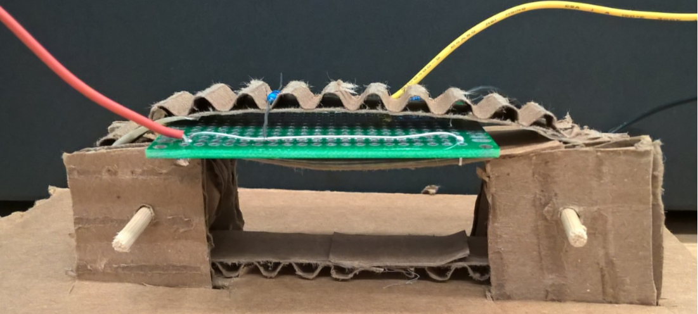

Electrical
Current circuit diagramMechanical
For this sprint, we pursued the idea of having a conveyor belt that would have notches just big enough to pick one resistor at a time out of some kind of containment unit. Then, as the conveyor belt would spin, the resistors would be pulled across a set of rails that connected to the electrical system. The notches would be just far enough apart that only one resistor would pass through the circuit at a time.
To test this idea, we made a sketch model out of cardboard and attached a protoboard that had our resistance testing circuit and a rail on each side to catch the resistor and measure its resistance.

 Sketch models of the conveyor belt idea
Goals For Next Sprint
For next sprint, we hope to prototype our mechanical system more as well as coming up with other possible mechanical designs. We also want to include the digital potentiometer into out electrical design, and output the measured resistance using the Arduino and an LCD screen.